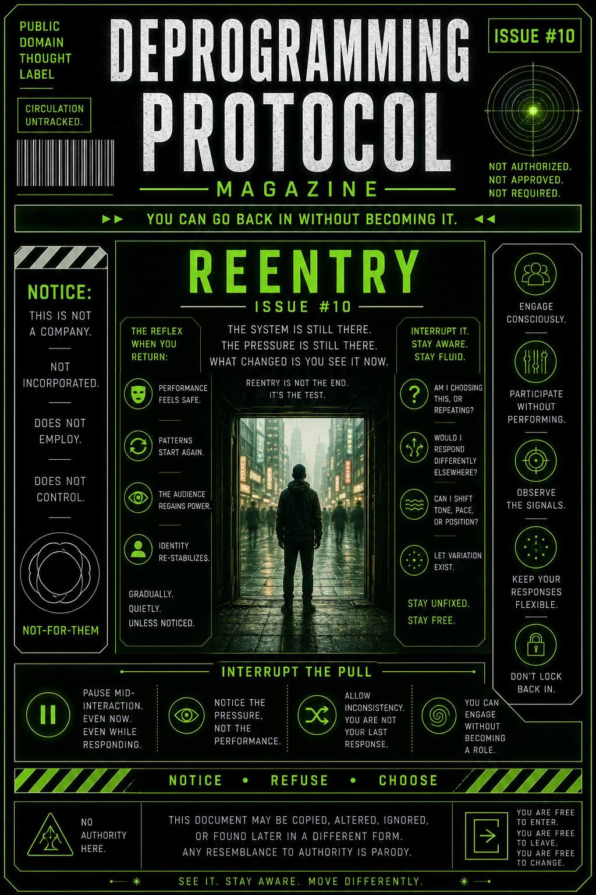

You didn’t escape the system to disappear.
You stepped out to see it…
Now you go back in.
Differently.
This issue exists to show how to engage again without getting pulled back into automatic roles.
It teaches you to notice when:
…and how to participate without becoming fixed.
The system is still there.
Same signals.
Same pressure.
Same loops.
What changed… is you see it now.
But seeing isn’t permanent protection.
Reentry is where people slip.
You engage once…
Then again…
And slowly:
Not all at once.
Gradually.
Familiarity feels like clarity.
And before you notice…
you’re back in orbit.
Reentry isn’t about staying out.
It’s about not locking back in.
When you engage, stay aware of movement.
Pause mid-interaction.
Yeah. Even now.
Even while responding.
Ask:
Let variation exist.
You’re not being unclear.
You’re staying unfixed.
This publication does not regulate participation.
You may engage.
You may withdraw.
You may change without notice.
Consistency is not required.
Any pressure to remain the same
originated outside this document.